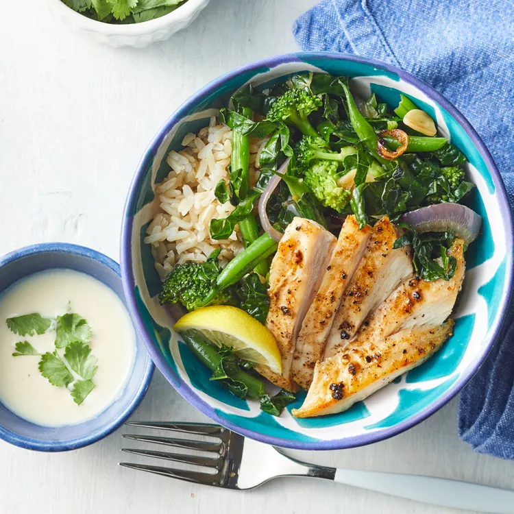

Green Veggie Bowl With Lemon-Tahini Dressing

Description
Treat your veggies like pasta and cook until al dente, or just done.
If you have a little extra time, double or triple the lemon-tahini dressing
and use it to quickly dress another salad or as a sauce for steak or shrimp.
To reduce the carbs even more, replace the brown rice with riced cauliflower.
Serves 4
- 449 Calories
- 19g fat
- 33g protein
- 37g carb
Ingredients
- ¼ cup tahini
- ¼ cup plus 2 Tbsp. cold water,divided
- ¼ cup fresh lemon juice
- ½ tsp. minced garlic plus 2 sliced garlic cloves, divided
- ¼ tsp. ground cumin
- ½ tsp. kosher salt, divided
- 4 (4-oz.) chicken cutlets, trimmed
- ¼ tsp. freshly ground black pepper
- 2 Tbsp. extra-virgin olive oil, divided
- ½ large red onion, sliced
- 1 cup green beans, trimmed and cut in half
- 1 cup chopped broccoli florets
- 4 cups thinly sliced kale
- 2 cups cooked brown rice
- 1/4 cup chopped fresh cilantro
Steps
- Whisk tahini and ¼ cup water in a small bowl until smooth.
Add lemon juice, minced garlic, cumin, and ¼ teaspoon salt,
and whisk to combine. Set aside.
- Season chicken with remaining ¼ teaspoon salt and pepper.
Heat 1 tablespoon oil in a large cast-iron skillet over
medium, swirling to coat. Add chicken and cook until chicken
is no longer pink, 3 to 5 minutes per side.
Remove chicken from pan, slice, and keep warm.
- Wipe out pan, and add remaining 1 Tbsp. oil.
Add onion and cook, stirring occasionally,
for 2 minutes. Add sliced garlic and cook 30
seconds; add green beans and broccoli. Cook,
stirring occasionally, for 2 minutes.
Stir in kale and add remaining 2 tablespoons water.
Cover and steam until vegetables are tender-crisp,
1 to 2 minutes.
- Spoon rice and vegetables into bowls,
and top with chicken. Drizzle with reserved
dressing and sprinkle with cilantro